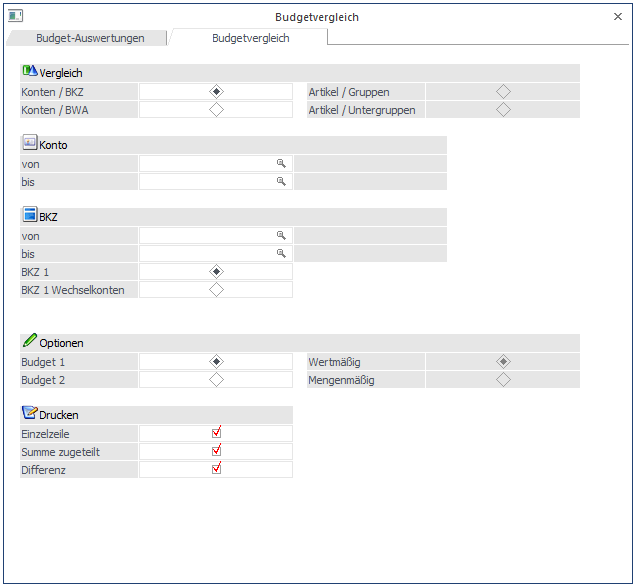

Im Menüpunkt
1 Auswertungen
1 Budget-Auswertungen
kann ein Abgleich der erfassten Budgetwerte durchgeführt werden. Dadurch kann festgestellt werden, ob die Budgetwerte z.B. einer BKZ oder einer Artikelgruppe mit den Budgetwerten der darin befindlichen Konten bzw. Artikel übereinstimmt.

Über die Auswahllistbox in der Buttonleiste kann das Wirtschaftsjahr gewählt werden, für das die Auswertung erfolgen soll. Damit können die Daten aus den Vorjahren angezeigt werden, ohne dass das Fenster geschlossen, und ein manueller Wirtschaftsjahreswechsel vorgenommen werden muss.
Ø Ausgabe
Es kann entschieden werden, ob die Ausgabe der Liste auf Bildschirm oder Drucker erfolgen soll.
Ø Vergleich
Hier kann der Bereich festgelegt werden, der ausgewertet werden soll. Es gibt die Möglichkeiten
Ø Konten / BKZ
Es werden die erfassten Budgetwerte der Konten mit denen der BKZ verglichen.
Ø Konten / BWA
Es werden die erfassten Budgetwerte der Konten mit denen der BWA verglichen.
Ø Artikel / Gruppen
Es werden die erfassten Budgetwerte der Artikel mit denen der Artikelgruppe verglichen.
Ø Artikel / Untergruppen
Es werden die erfassten Budgetwerte der Artikel mit denen der Artikeluntergruppe verglichen.
Ø Einzelzeile
aktiv
Es wird jedes Konto, für das ein Budget erfasst wurde, angezeigt.
inaktiv
Es werden nur die übergeordneten Bereiche (BKZ oder BWA) angezeigt, für die Werte erfasst wurden.
Ø Summe zugeteilt
aktiv
Für jeden übergeordneten Bereich (BKZ oder BWA) wird die Summe der für die einzelnen Konten erfassten Budgetwerte angedruckt.
inaktiv
Es werden keine Summenzeilen angedruckt.
Ø Differenz
aktiv
Es wird die Differenz zwischen den Budgetwerten der Konten und des übergeordneten Bereiches (BKZ oder BWA) ausgedruckt.
inaktiv
Es wird keine Differenz angedruckt.
Ø Budget
Es kann entschieden werden, ob die Auswertung für das Budget 1 oder für das Budget 2 durchgeführt werden soll.
Ø Beurteilung
Wenn die Option Artikel / Gruppen gewählt wurde, kann zusätzlich entschieden werden, ob die mengen- oder die wertmäßigen Budgets zur Auswertung herangezogen werden sollen.
Einschränkung
Ø Konten/Artikel von - bis
Der Kontenbereich, der ausgewertet werden soll, kann eingeschränkt werden. Durch Drücken der F9-Taste kann nach allen angelegten Konten gesucht werden.
Ø BKZ - BWA - Artikelgruppen von - bis
Je nachdem, welche Option ausgewählt wurde, können die BKZs, die BWA-Kennzahlen bzw. die Artikelgruppen eingeschränkt werden. Durch Drücken der F9-Taste kann nach angelegten Stammdaten gesucht werden.
Zusätzlich kann entschieden werden, ob die Auswertung auf Basis der BKZ1 oder BKZ2 bzw. auf Basis der BWA1, BWA2 oder BWA3 durchgeführt werden soll.
Durch Drücken der F5-Taste wird die Auswertung gestartet.